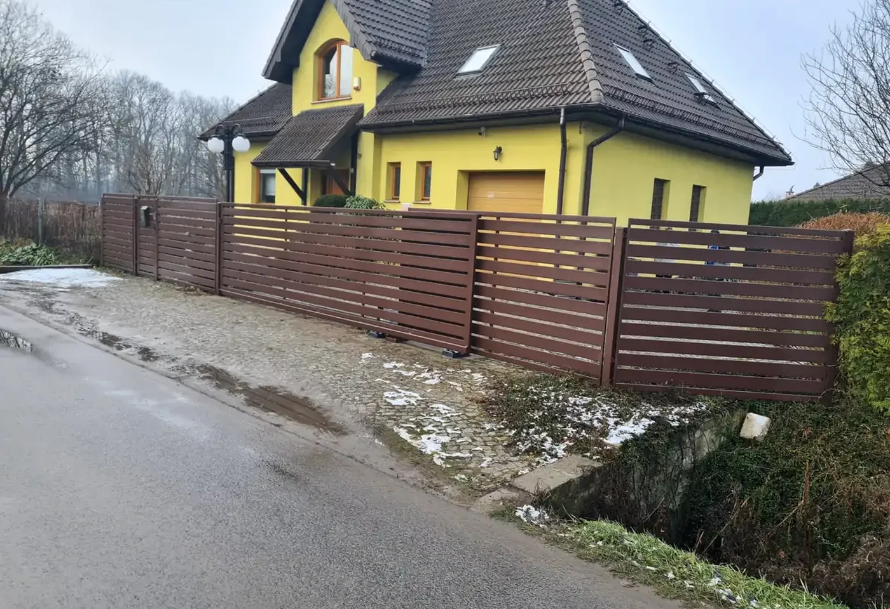

01 / Bramy
Bramy przesuwne
Rozwiązanie wygodne w codziennym użytkowaniu i dobre tam, gdzie skrzydło może przesuwać się wzdłuż ogrodzenia.
- konstrukcja na wymiar
- wypełnienie dopasowane do frontu
- przygotowanie pod automatykę
- montaż i regulacja